November 12 - 14, 2004
| When we lived in Bartlesville, we would always
stay in the cabins at Osage Hills a couple of times a year. We
decided it would be nice to do that again, now that we are living back in
Oklahoma. On our second night there we invited some of our old
friends out for a cookout. It was very cold but a few true friends
braved the weather to come see us. It was fun catching up with
everyone. It was a great weekend, I would recommend the cabins at
Osage Hills State Park to anyone. |
|
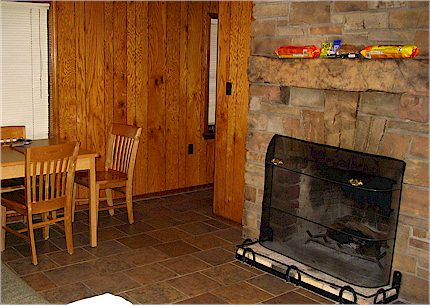 |
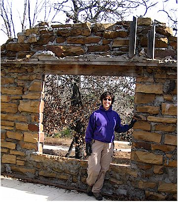 |
| A view of the living room. | Checking out an old cabin which is being rebuilt. |
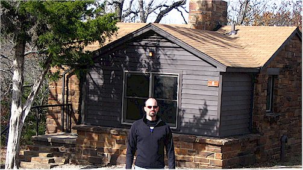 |
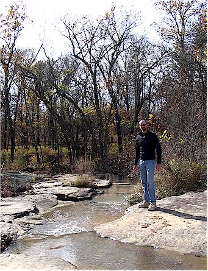 |
| Eric in front of one of the cabins. | Jumping the stream. |
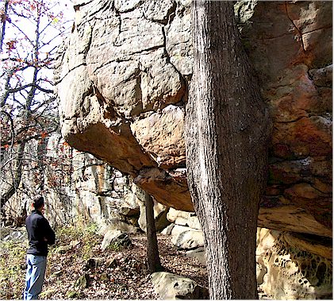 |
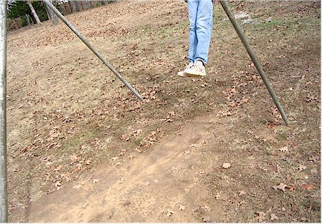 |
| I liked how this tree just kept on growing right around the rock. | Why you don't often see pictures taken while swinging. |
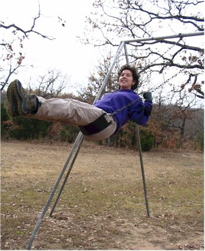 |
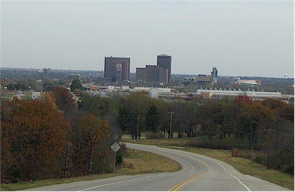 |
| Here I am in mid-swing. | We had to venture into town on Saturday to revisit Bartlesville and to eat
our favorite Chinese food at Ocean China. |
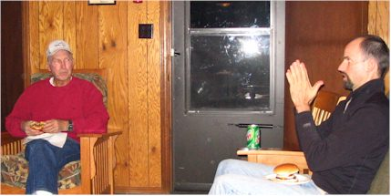 |
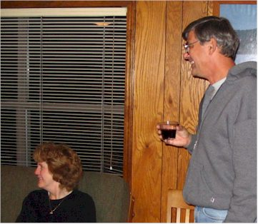 |
| I don't think Howard is buying Eric's fish tale!! | Mike Dronyk & his wife (I feel bad, I've lost her name!!) |
| 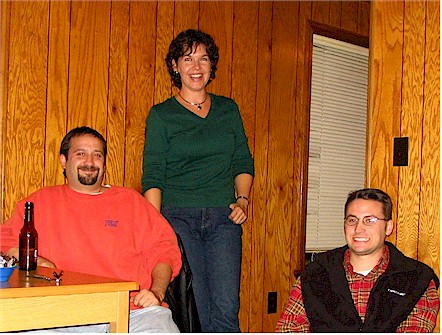 |
|
| My IT buds - Mark Nel & Chad Benson | |
|
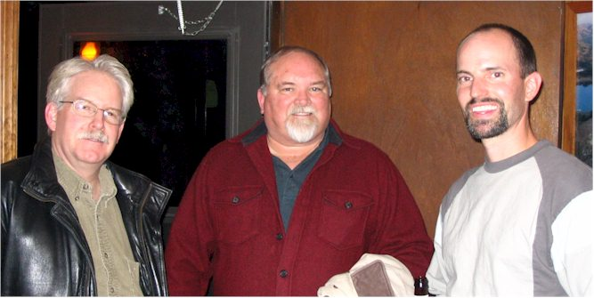 These are the guys we went to Istanbul, Turkey with several
years ago - |
|